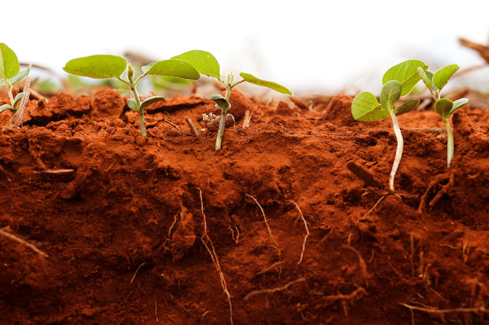

A eclosão de um novo conflito no Oriente Médio reacendeu os temores no mercado internacional de fertilizantes, trazendo incertezas quanto à oferta global e pressionando a precificação de nitrogenados e fosfatados. A avaliação é da StoneX, empresa global de serviços financeiros.
Em 2024, a região foi responsável por 41% das exportações mundiais de ureia, 28% das exportações globais de amônia e 29% das vendas internacionais de DAP. Diante desse peso relevante no comércio global, eventuais disrupções na produção ou no escoamento de cargas impactam diretamente os fluxos comerciais e tendem a influenciar os preços praticados no mercado internacional.
Neste momento, os investidores ainda avaliam os possíveis desdobramentos do conflito, o que mantém elevada a incerteza sobre os impactos imediatos na formação de preços. No entanto, já há sinais claros de cautela: fornecedores da região retiraram ofertas do mercado enquanto aguardam maior clareza sobre a evolução do cenário geopolítico. O primeiro reflexo observado, portanto, é a redução temporária da oferta disponível.
Outro ponto de atenção envolve a logística. Navios têm evitado trafegar pelo estreito de Hormuz, rota estratégica para o escoamento de fertilizantes do Oriente Médio. O aumento do risco na região pode gerar atrasos nas entregas e encarecer os custos logísticos, afetando importadores em diferentes partes do mundo.
Além disso, a valorização do petróleo decorrente das tensões geopolíticas pode pressionar os custos de combustíveis e, consequentemente, os fretes internacionais. Para países importadores líquidos de fertilizantes, como o Brasil, isso representa um fator adicional de alta, ao encarecer o custo final dos insumos.
O Irã, no centro do conflito, ocupa posição estratégica no mercado global de nitrogenados. Em 2024, o país respondeu por 11% das exportações mundiais de ureia e por 5% das exportações globais de amônia. Segundo fontes não oficiais, o Irã teria exportado cerca de 1,3 milhão de toneladas de ureia ao Brasil em 2024, o equivalente a aproximadamente 16% das importações brasileiras do produto.
Caso haja um estrangulamento da capacidade exportadora iraniana, o impacto tende a ser relevante para compradores globais e, em especial, para o Brasil, altamente dependente de importações para suprir sua demanda por nitrogenados.
Por outro lado, o momento do calendário reduz parcialmente os efeitos imediatos sobre o mercado brasileiro, que já se encontra fora da alta temporada de compras de nitrogenados. Países como Estados Unidos, Austrália e possivelmente parte da Europa, que atravessam períodos de maior demanda, podem sentir impactos mais diretos no curto prazo.
De todo modo, considerando a relevância do Oriente Médio e do Irã para a produção e exportação global de fertilizantes, o conflito é tratado pelo mercado como um fator altista, com potencial para alterar o cenário do setor nas próximas semanas. A principal incógnita permanece sendo a duração do conflito, a extensão dos danos e o número de países envolvidos — variáveis que determinarão a magnitude e a persistência dos efeitos sobre os preços globais.
FONTE: STONE X
MUMBAI, 3 Mar (Reuters) - As importações de óleo de palma pela Índia aumentaram 10,1% em fevereiro, atingindo o maior nível em seis meses, uma vez que o desconto cada vez maior em relação aos óleos concorrentes levou as refinarias a aumentar as compras e reduzir as importações de óleo de girassol, de acordo com cinco comerciantes.
O aumento das importações de óleo de palma e óleo de soja pela Índia pode reduzir os estoques na Indonésia e na Malásia, impulsionando os futuros do óleo de palma da Malásia e do óleo de soja dos EUA.
As importações de óleo de palma aumentaram para 844.000 toneladas no mês passado, o maior nível desde agosto de 2025, ante 766.384 toneladas em janeiro, de acordo com estimativas dos comerciantes.
Enquanto isso, as importações de óleo de soja subiram 8,7% em fevereiro em relação à mínima de 19 meses do mês anterior, para 303.000 toneladas, enquanto os embarques de óleo de girassol caíram 45,3%, para 146.000 toneladas.
As importações totais de óleo comestível da Índia em fevereiro caíram 1,4% em relação ao mês anterior, para 1,29 milhão de toneladas, devido a uma retração acentuada nas compras de óleo de girassol, segundo estimativas.
As estimativas excluem os embarques isentos de impostos que chegaram pelas fronteiras terrestres do Nepal, disseram os comerciantes.
Estima-se que a Índia tenha importado 70.000 toneladas de óleos comestíveis, principalmente óleo de soja, do Nepal pela fronteira terrestre em fevereiro, disse Rajesh Patel, sócio-gerente da GGN Research, empresa comercializadora de óleos comestíveis em Rajkot, Gujarat.
A Associação de Extratores de Solventes da Índia deve publicar seus dados de importação de fevereiro até meados de março.
“As importações de óleo de palma aumentaram porque ele estava mais barato do que os óleos concorrentes e agora as temperaturas também estão subindo. As refinarias começaram a acumular estoques”, disse Aashish Acharya, vice-presidente da Patanjali Foods Ltd, uma das principais importadoras de óleos comestíveis.
As importações de óleo de palma da Índia geralmente diminuem durante os meses de inverno, pois o óleo tropical se solidifica em temperaturas mais baixas, limitando seu uso nas regiões do norte do país.
As importações de óleo de palma devem aumentar ainda mais em março, depois que os comerciantes correram para fazer pedidos nas últimas semanas, quando o produto estava significativamente mais barato do que o óleo de soja, disse Acharya.
A Índia compra óleo de palma principalmente da Indonésia e da Malásia, e importa óleo de soja e óleo de girassol da Argentina, Brasil, Rússia e Ucrânia.
FONTE: REUTERS

A expansão da agricultura no MATOPIBA — região que abrange áreas do Maranhão, Tocantins, Piauí e Bahia — tem sido impulsionada pela disponibilidade de grandes áreas planas e mecanizáveis, com custos competitivos em relação a polos já consolidados. O avanço da soja, do milho e do algodão ocorre, porém, em um ambiente com desafios mais acentuados.
O pesquisador Bruno Alves, da Embrapa Agrobiologia, explica que a região reúne condições favoráveis à expansão, mas exige adaptação técnica. “O MATOPIBA combina disponibilidade de áreas agricultáveis com limitações naturais que demandam manejo mais criterioso, especialmente em relação ao solo e ao clima”, afirma.
Clima mais instável exige raízes profundas
Segundo Alves, o principal diferencial da região em relação ao Centro-Oeste consolidado está no regime climático. “Há maior variabilidade de chuvas, períodos secos mais prolongados e veranicos frequentes. Somam-se a isso temperaturas elevadas, que aumentam a evapotranspiração e intensificam o risco de estresse hídrico”, observa.
Nesse cenário, práticas restritas à correção superficial da fertilidade podem não ser suficientes. “Limitar a correção aos primeiros 20 centímetros pode trazer respostas parciais. Em ambientes com maior risco hídrico, a estabilidade produtiva depende da formação de sistemas radiculares mais profundos”, destaca.
Ele reforça que a produtividade está diretamente associada à capacidade das plantas de acessar água armazenada em camadas subsuperficiais. “A calagem em profundidade e o uso de gesso agrícola são estratégias importantes porque ampliam a disponibilidade de cálcio no perfil, favorecendo o crescimento radicular e aumentando a tolerância das culturas à seca”, explica.
Solos arenosos pedem ajustes finos
Os solos predominantes no MATOPIBA são, em grande parte, altamente intemperizados, ácidos, com baixa capacidade de troca catiônica (CTC) e baixos teores de matéria orgânica. Em muitas áreas, predominam texturas médias a arenosas, o que exige cuidados adicionais.
“Em solos de baixo poder tampão, as aplicações de corretivos precisam ser graduais. Doses comuns em outras regiões podem ser excessivas e provocar desequilíbrios nutricionais”, alerta Bruno Alves. Ele acrescenta que o uso de calcário com reatividade mais lenta vem sendo avaliado como alternativa para reduzir intervenções mecânicas excessivas.
Na adubação, os ajustes também são necessários. “Com menor capacidade de retenção de nutrientes, os riscos de lixiviação aumentam. Por isso, a gestão de fertilizantes precisa considerar cuidadosamente fonte, dose, posicionamento e momento de aplicação”, afirma.
Além da fertilidade da camada arável, o pesquisador destaca a importância de construir um perfil de solo funcional. “No MATOPIBA, melhorar as condições químicas e biológicas em profundidade é tão relevante quanto corrigir a superfície. Plantas de cobertura com sistema radicular agressivo, maior aporte de matéria orgânica e plantio direto são pilares desse processo”, pontua.
Bioinsumos como aliados da resiliência
Para Bruno Alves, os bioinsumos desempenham papel estratégico nesse contexto. “Produtos biológicos, como inoculantes e bioestimulantes, contribuem para maior eficiência no uso de nutrientes, estimulam o crescimento radicular e ampliam a tolerância das culturas a estresses como seca e altas temperaturas”, afirma.
Já o pesquisador Jerri Zilli, também da Embrapa Agrobiologia, observa que a adoção desses produtos vem avançando na região. “O uso de inoculantes tem crescido de forma consistente nos últimos anos, acompanhando a expansão e a tecnificação das lavouras, especialmente de soja e milho”, diz.
Segundo ele, os inoculantes reúnem microrganismos com capacidade de promover o desenvolvimento vegetal. “As bactérias fixadoras de nitrogênio, conhecidas como rizóbios, estão entre as que proporcionam maior retorno agronômico, pois fornecem nitrogênio biologicamente às plantas”, explica.
Zilli acrescenta que outros microrganismos também contribuem para o desempenho das culturas. “Bactérias associativas, como Azospirillum e Bacillus, além de fungos micorrízicos arbusculares, estimulam o crescimento das raízes por meio de compostos com ação semelhante à de fitormônios”, detalha. “Isso favorece a emissão de raízes laterais, amplia o volume de solo explorado e melhora o aproveitamento de água e nutrientes.”
O especialista destaca ainda que muitos bioinsumos auxiliam na solubilização de fósforo e na mobilização de micronutrientes. “Há também efeitos sobre a estrutura do solo, com estímulo à agregação e aumento da porosidade, o que melhora a infiltração de água e reduz a resistência à penetração das raízes”, afirma.
Para o pesquisador, os biológicos não substituem o manejo tradicional, mas o complementam. “Os bioinsumos atuam de forma integrada ao manejo físico e químico, potencializando seus resultados. O efeito prático é um sistema radicular mais profundo e eficiente, capaz de sustentar maior produtividade com estabilidade”, resume.
Integração entre químicos e biológicos
Em entrevista ao Notícias Agrícolas, Michell Scaff, gerente de marketing da Nitro - multinacional brasileira do setor de insumos agrícolas, afirma que os bioinsumos vêm ganhando espaço diante das limitações no desenvolvimento de novas moléculas químicas.
“Os biológicos não substituem totalmente os defensivos convencionais, mas ampliam o leque de ferramentas disponíveis ao produtor. Eles entram como complemento dentro de um manejo integrado”, destaca.
Segundo Scaff, o lançamento de novos ingredientes ativos tem se tornado mais restrito. “A inovação tem ocorrido mais em formulações e combinações do que em novas moléculas. Nesse cenário, os biodefensivos assumem papel estratégico ao diversificar o manejo e aumentar a eficiência dos sistemas produtivos”, afirma.
Sobre a integração entre nutrição e biológicos, ele ressalta que a combinação é determinante para resultados consistentes. “As cultivares atuais têm alto potencial genético. Para expressá-lo, é preciso proteger as plantas contra pragas e doenças e, ao mesmo tempo, garantir nutrição adequada, na dose e no momento corretos”, explica.
Para Scaff, quando essas estratégias são aplicadas de forma coordenada, o impacto é direto na produtividade. “O uso integrado de tecnologias se traduz em maior rendimento por hectare e melhor rentabilidade ao agricultor”, conclui.